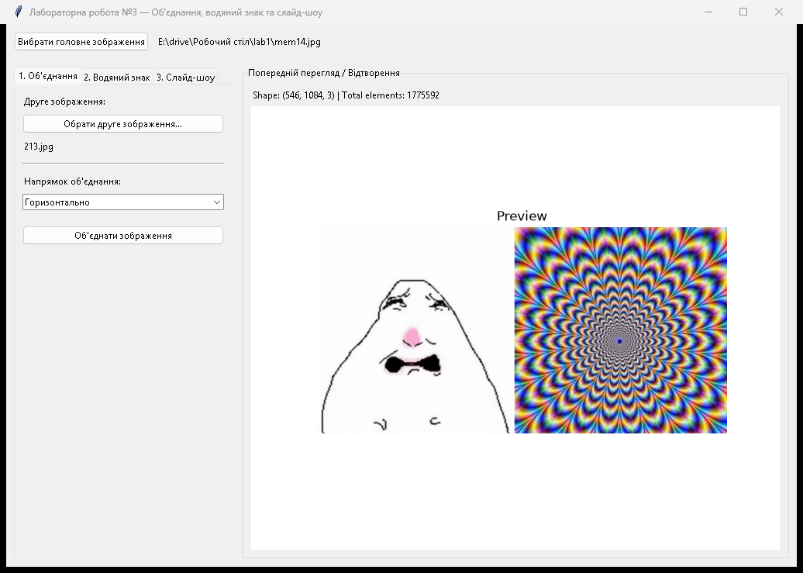
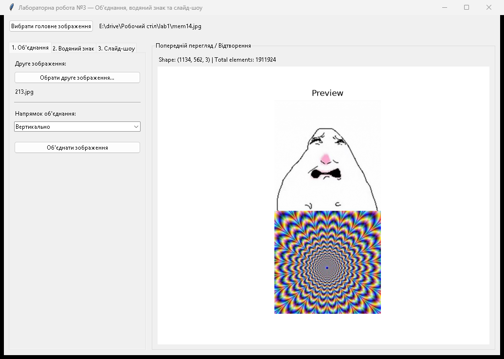
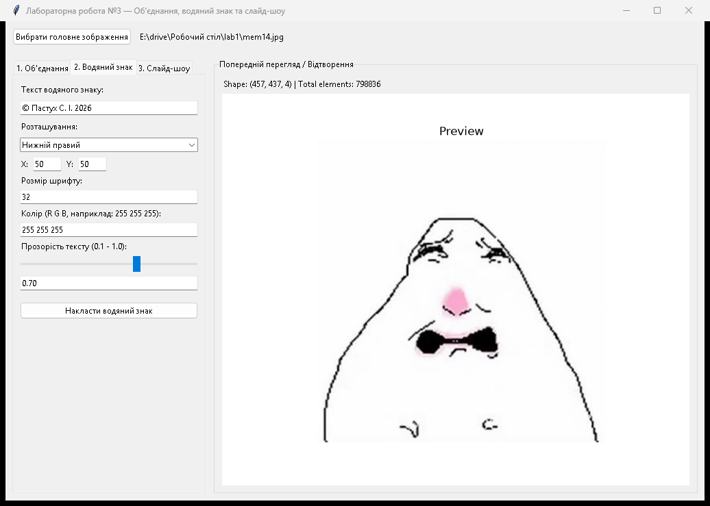
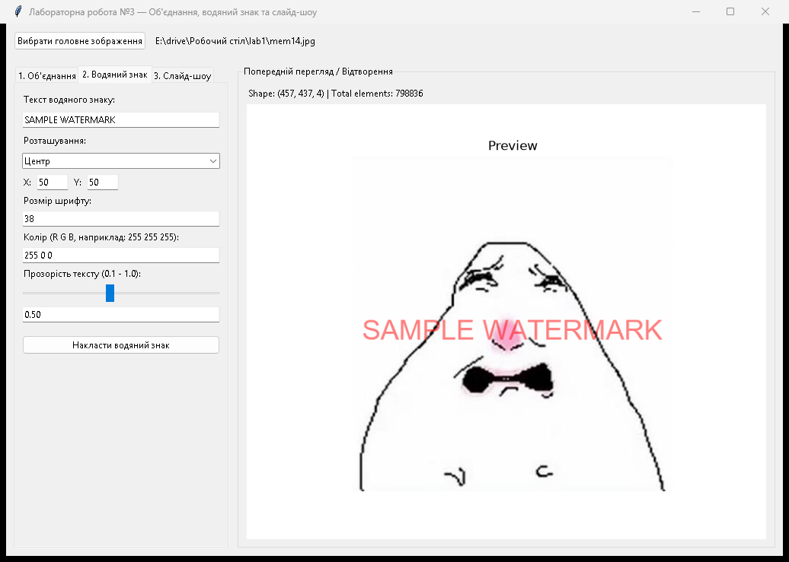
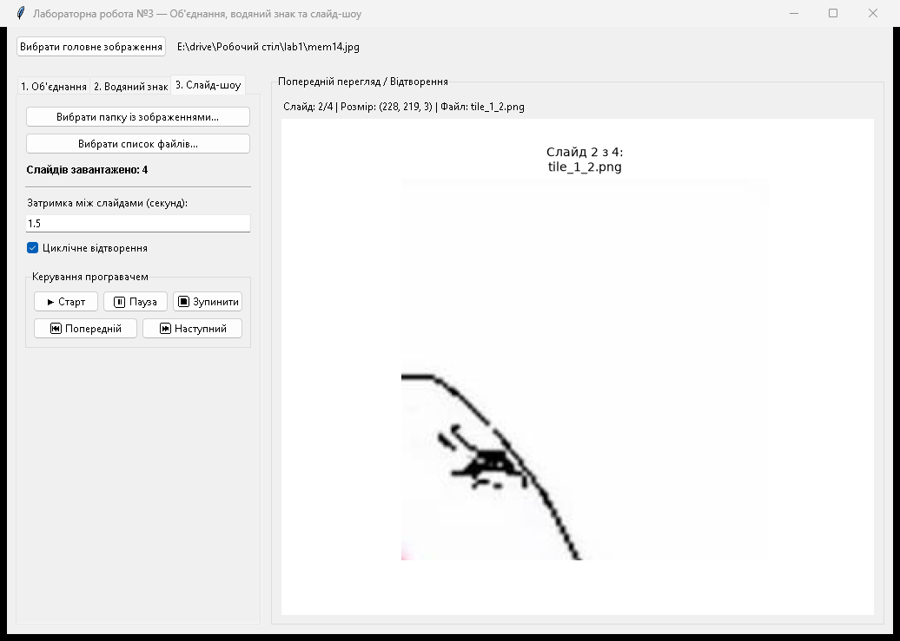
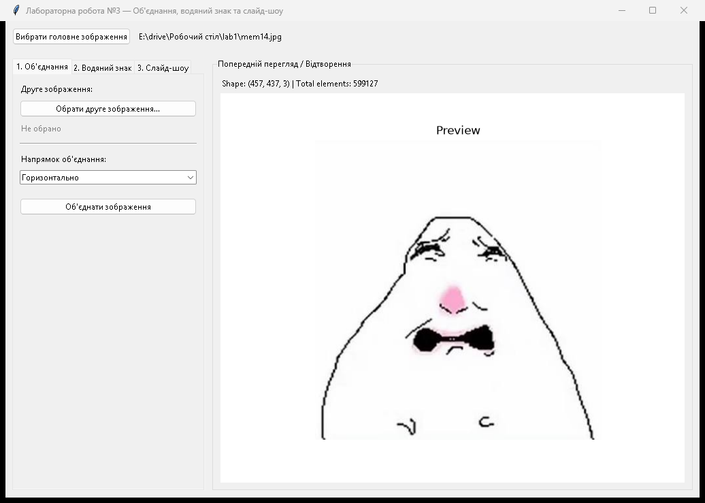

ЗВІТ
Тема: розробка програмного забезпечення для обробки зображень: об'єднання зображень, створення водяного знаку та слайд-шоу.
Тема: розробка програмного забезпечення для обробки зображень: об'єднання зображень, створення водяного знаку та слайд-шоу.
Мета: ознайомитися з методами обробки зображень для об'єднання двох зображень, додавання напівпрозорого водяного знаку та створення слайд-шоу; отримати практичний досвід у налаштуванні параметрів текстових елементів і автоматизації послідовного відображення зображень у Python.
import os
import glob
import tkinter as tk
from tkinter import ttk, filedialog, messagebox
import numpy as np
from PIL import Image, ImageDraw, ImageFont
from matplotlib import pyplot as plt
from matplotlib.backends.backend_tkagg import FigureCanvasTkAgg
from skimage.io import imread, imsave
from skimage.transform import resize
def show_and_save_gui(image_array: np.ndarray, file_name: str, canvas_frame, info_label, save: bool = True):
for widget in canvas_frame.winfo_children():
widget.destroy()
fig, ax = plt.subplots(figsize=(5, 4))
if image_array.ndim == 2:
ax.imshow(image_array, cmap="gray")
else:
ax.imshow(image_array)
ax.axis("off")
ax.set_title("Preview")
canvas = FigureCanvasTkAgg(fig, master=canvas_frame)
canvas.draw()
canvas.get_tk_widget().pack(fill=tk.BOTH, expand=True)
plt.close(fig)
info_label.config(text=f"Shape: {image_array.shape} | Total elements: {image_array.size}")
if save and file_name:
if messagebox.askyesno("Save Image", f"Save image as:\n{file_name}?"):
try:
if image_array.ndim == 3 and image_array.shape[2] == 4 and not file_name.lower().endswith((".png", ".tiff", ".tif")):
file_name = file_name.rsplit(".", 1)[0] + ".png"
imsave(file_name, image_array)
messagebox.showinfo("Success", f"Saved as: {file_name}")
except Exception as e:
messagebox.showerror("Error", f"Failed to save image:\n{e}")
def merge_images(img1_path: str, img2_path: str, direction: str, canvas_frame, info_label):
img1 = imread(img1_path)
img2 = imread(img2_path)
def to_rgb(im):
if im.ndim == 2:
return np.stack([im, im, im], axis=-1)
elif im.ndim == 3 and im.shape[2] == 4:
return im[:, :, :3]
return im[:, :, :3]
rgb1 = to_rgb(img1)
rgb2 = to_rgb(img2)
h1, w1 = rgb1.shape[:2]
h2, w2 = rgb2.shape[:2]
if direction == "horizontal":
target_h = max(h1, h2)
w1_new = int(round(w1 * (target_h / h1)))
w2_new = int(round(w2 * (target_h / h2)))
r1 = resize(rgb1, (target_h, w1_new), preserve_range=True, anti_aliasing=True).astype(np.uint8)
r2 = resize(rgb2, (target_h, w2_new), preserve_range=True, anti_aliasing=True).astype(np.uint8)
merged = np.concatenate([r1, r2], axis=1)
else:
target_w = max(w1, w2)
h1_new = int(round(h1 * (target_w / w1)))
h2_new = int(round(h2 * (target_w / w2)))
r1 = resize(rgb1, (h1_new, target_w), preserve_range=True, anti_aliasing=True).astype(np.uint8)
r2 = resize(rgb2, (h2_new, target_w), preserve_range=True, anti_aliasing=True).astype(np.uint8)
merged = np.concatenate([r1, r2], axis=0)
base_name = img1_path.rsplit(".", 1)[0]
ext = img1_path.rsplit(".", 1)[1]
new_file_name = f"{base_name}_merged_{direction}.{ext}"
show_and_save_gui(merged, new_file_name, canvas_frame, info_label)
def add_watermark(image_name: str, text: str, position_name: str, custom_x: int, custom_y: int,
font_size: int, color_rgb: tuple, alpha: float, canvas_frame, info_label):
base_img = Image.open(image_name).convert("RGBA")
w, h = base_img.size
watermark_layer = Image.new("RGBA", (w, h), (0, 0, 0, 0))
draw = ImageDraw.Draw(watermark_layer)
try:
font = ImageFont.truetype("arial.ttf", font_size)
except IOError:
try:
font = ImageFont.truetype("DejaVuSans.ttf", font_size)
except IOError:
font = ImageFont.load_default()
bbox = draw.textbbox((0, 0), text, font=font)
text_w = bbox[2] - bbox[0]
text_h = bbox[3] - bbox[1]
margin = 20
if position_name == "Верхній лівий":
pos = (margin, margin)
elif position_name == "Верхній правий":
pos = (w - text_w - margin, margin)
elif position_name == "Нижній лівий":
pos = (margin, h - text_h - margin)
elif position_name == "Нижній правий":
pos = (w - text_w - margin, h - text_h - margin)
elif position_name == "Центр":
pos = ((w - text_w) // 2, (h - text_h) // 2)
else:
pos = (custom_x, custom_y)
alpha_byte = int(np.clip(alpha, 0.0, 1.0) * 255)
text_color = (color_rgb[0], color_rgb[1], color_rgb[2], alpha_byte)
draw.text(pos, text, font=font, fill=text_color)
watermarked = Image.alpha_composite(base_img, watermark_layer)
result_array = np.array(watermarked)
base_name = image_name.rsplit(".", 1)[0]
new_file_name = f"{base_name}_watermark.png"
show_and_save_gui(result_array, new_file_name, canvas_frame, info_label)
class AppLab3:
def __init__(self, root):
self.root = root
self.root.title("Лабораторна робота №3 — Об'єднання, водяний знак та слайд-шоу")
self.root.geometry("1020x700")
self.image_path = ""
self.second_image_path = ""
self.slideshow_images = []
self.current_slide_idx = 0
self.is_slideshow_running = False
self.slideshow_timer_id = None
file_frame = ttk.Frame(root, padding=10)
file_frame.pack(fill=tk.X)
ttk.Button(file_frame, text="Вибрати головне зображення", command=self.select_file).pack(side=tk.LEFT)
self.lbl_file = ttk.Label(file_frame, text="Файл не вибрано", padding=(10, 0))
self.lbl_file.pack(side=tk.LEFT, fill=tk.X, expand=True)
main_frame = ttk.Frame(root, padding=10)
main_frame.pack(fill=tk.BOTH, expand=True)
self.notebook = ttk.Notebook(main_frame)
self.notebook.pack(side=tk.LEFT, fill=tk.BOTH, padx=(0, 10), expand=False)
preview_frame = ttk.LabelFrame(main_frame, text="Попередній перегляд / Відтворення", padding=10)
preview_frame.pack(side=tk.RIGHT, fill=tk.BOTH, expand=True)
self.lbl_info = ttk.Label(preview_frame, text="")
self.lbl_info.pack(anchor=tk.W, pady=(0, 5))
self.canvas_frame = ttk.Frame(preview_frame)
self.canvas_frame.pack(fill=tk.BOTH, expand=True)
self._init_merge_tab()
self._init_watermark_tab()
self._init_slideshow_tab()
def select_file(self):
path = filedialog.askopenfilename(
filetypes=[("Image files", "*.jpg *.jpeg *.png *.bmp *.tiff *.gif"), ("All files", "*.*")]
)
if path:
try:
self.image_path = path
self.lbl_file.config(text=path)
image_array = imread(path)
show_and_save_gui(image_array, path, self.canvas_frame, self.lbl_info, save=False)
except Exception as e:
messagebox.showerror("Помилка", f"Не вдалося відкрити зображення:\n{e}")
def _check_file(self):
if not self.image_path:
messagebox.showerror("Помилка", "Спочатку оберіть головне зображення!")
return False
return True
def _init_merge_tab(self):
tab = ttk.Frame(self.notebook, padding=10)
self.notebook.add(tab, text="1. Об'єднання")
ttk.Label(tab, text="Друге зображення:").pack(anchor=tk.W, pady=2)
ttk.Button(tab, text="Обрати друге зображення...", command=self._select_second_image).pack(fill=tk.X, pady=5)
self.lbl_second = ttk.Label(tab, text="Не обрано", foreground="gray")
self.lbl_second.pack(anchor=tk.W, pady=2)
ttk.Separator(tab, orient=tk.HORIZONTAL).pack(fill=tk.X, pady=10)
ttk.Label(tab, text="Напрямок об'єднання:").pack(anchor=tk.W, pady=2)
self.combo_dir = ttk.Combobox(tab, values=["Горизонтально", "Вертикально"], state="readonly")
self.combo_dir.current(0)
self.combo_dir.pack(fill=tk.X, pady=5)
ttk.Button(tab, text="Об'єднати зображення", command=self._run_merge).pack(pady=15, fill=tk.X)
def _select_second_image(self):
path = filedialog.askopenfilename(
filetypes=[("Image files", "*.jpg *.jpeg *.png *.bmp *.tiff *.gif"), ("All files", "*.*")]
)
if path:
self.second_image_path = path
self.lbl_second.config(text=os.path.basename(path), foreground="black")
def _run_merge(self):
if not self._check_file(): return
if not self.second_image_path:
messagebox.showerror("Помилка", "Будь ласка, оберіть друге зображення для об'єднання!")
return
direction = "horizontal" if self.combo_dir.get() == "Горизонтально" else "vertical"
merge_images(self.image_path, self.second_image_path, direction, self.canvas_frame, self.lbl_info)
def _init_watermark_tab(self):
tab = ttk.Frame(self.notebook, padding=10)
self.notebook.add(tab, text="2. Водяний знак")
ttk.Label(tab, text="Текст водяного знаку:").pack(anchor=tk.W, pady=2)
self.ent_wm_text = ttk.Entry(tab)
self.ent_wm_text.insert(0, "© Confidential 2026")
self.ent_wm_text.pack(fill=tk.X, pady=5)
ttk.Label(tab, text="Розташування:").pack(anchor=tk.W, pady=2)
self.combo_pos = ttk.Combobox(tab, values=["Нижній правий", "Нижній лівий", "Верхній правий", "Верхній лівий", "Центр", "Користувацька (X, Y)"], state="readonly")
self.combo_pos.current(0)
self.combo_pos.pack(fill=tk.X, pady=5)
coord_frame = ttk.Frame(tab)
coord_frame.pack(fill=tk.X, pady=2)
ttk.Label(coord_frame, text="X:").pack(side=tk.LEFT)
self.ent_wm_x = ttk.Entry(coord_frame, width=6)
self.ent_wm_x.insert(0, "50")
self.ent_wm_x.pack(side=tk.LEFT, padx=5)
ttk.Label(coord_frame, text="Y:").pack(side=tk.LEFT)
self.ent_wm_y = ttk.Entry(coord_frame, width=6)
self.ent_wm_y.insert(0, "50")
self.ent_wm_y.pack(side=tk.LEFT, padx=5)
ttk.Label(tab, text="Розмір шрифту:").pack(anchor=tk.W, pady=2)
self.ent_wm_size = ttk.Entry(tab)
self.ent_wm_size.insert(0, "36")
self.ent_wm_size.pack(fill=tk.X, pady=2)
ttk.Label(tab, text="Колір (R G B, наприклад: 255 255 255):").pack(anchor=tk.W, pady=2)
self.ent_wm_color = ttk.Entry(tab)
self.ent_wm_color.insert(0, "255 255 255")
self.ent_wm_color.pack(fill=tk.X, pady=2)
ttk.Label(tab, text="Прозорість тексту (0.1 - 1.0):").pack(anchor=tk.W, pady=2)
self.scale_wm_alpha = ttk.Scale(tab, from_=0.1, to=1.0, value=0.6)
self.scale_wm_alpha.pack(fill=tk.X, pady=2)
self.ent_wm_alpha = ttk.Entry(tab)
self.ent_wm_alpha.insert(0, "0.6")
self.ent_wm_alpha.pack(fill=tk.X, pady=2)
def sync_alpha(val):
self.ent_wm_alpha.delete(0, tk.END)
self.ent_wm_alpha.insert(0, f"{float(val):.2f}")
self.scale_wm_alpha.config(command=sync_alpha)
ttk.Button(tab, text="Накласти водяний знак", command=self._run_watermark).pack(pady=15, fill=tk.X)
def _run_watermark(self):
if not self._check_file(): return
text = self.ent_wm_text.get().strip()
if not text:
messagebox.showerror("Помилка", "Введіть текст водяного знаку!")
return
try:
pos_name = self.combo_pos.get()
x = int(self.ent_wm_x.get())
y = int(self.ent_wm_y.get())
fsize = int(self.ent_wm_size.get())
color_parts = [int(v) for v in self.ent_wm_color.get().split()]
if len(color_parts) != 3: raise ValueError("Color must have 3 integers")
color_rgb = tuple(color_parts)
alpha = float(self.ent_wm_alpha.get())
except Exception as e:
messagebox.showerror("Помилка", f"Некоректні параметри водяного знаку:\n{e}")
return
add_watermark(self.image_path, text, pos_name, x, y, fsize, color_rgb, alpha, self.canvas_frame, self.lbl_info)
def _init_slideshow_tab(self):
tab = ttk.Frame(self.notebook, padding=10)
self.notebook.add(tab, text="3. Слайд-шоу")
ttk.Button(tab, text="Вибрати папку із зображеннями...", command=self._select_slideshow_folder).pack(fill=tk.X, pady=3)
ttk.Button(tab, text="Вибрати список файлів...", command=self._select_slideshow_files).pack(fill=tk.X, pady=3)
self.lbl_slides_count = ttk.Label(tab, text="Слайдів завантажено: 0", font=("Arial", 9, "bold"))
self.lbl_slides_count.pack(anchor=tk.W, pady=5)
ttk.Separator(tab, orient=tk.HORIZONTAL).pack(fill=tk.X, pady=5)
ttk.Label(tab, text="Затримка між слайдами (секунд):").pack(anchor=tk.W, pady=2)
self.ent_delay = ttk.Entry(tab)
self.ent_delay.insert(0, "1.5")
self.ent_delay.pack(fill=tk.X, pady=2)
self.var_loop = tk.BooleanVar(value=True)
ttk.Checkbutton(tab, text="Циклічне відтворення", variable=self.var_loop).pack(anchor=tk.W, pady=5)
btn_frame = ttk.LabelFrame(tab, text="Керування програвачем", padding=5)
btn_frame.pack(fill=tk.X, pady=10)
r1 = ttk.Frame(btn_frame)
r1.pack(fill=tk.X, pady=2)
self.btn_play = ttk.Button(r1, text="▶ Старт", command=self._start_slideshow)
self.btn_play.pack(side=tk.LEFT, fill=tk.X, expand=True, padx=2)
self.btn_pause = ttk.Button(r1, text="⏸ Пауза", command=self._pause_slideshow)
self.btn_pause.pack(side=tk.LEFT, fill=tk.X, expand=True, padx=2)
self.btn_stop = ttk.Button(r1, text="⏹ Зупинити", command=self._stop_slideshow)
self.btn_stop.pack(side=tk.LEFT, fill=tk.X, expand=True, padx=2)
r2 = ttk.Frame(btn_frame)
r2.pack(fill=tk.X, pady=4)
ttk.Button(r2, text="⏮ Попередній", command=self._prev_slide).pack(side=tk.LEFT, fill=tk.X, expand=True, padx=2)
ttk.Button(r2, text="⏭ Наступний", command=self._next_slide).pack(side=tk.LEFT, fill=tk.X, expand=True, padx=2)
def _select_slideshow_folder(self):
folder = filedialog.askdirectory()
if folder:
valid_exts = ("*.jpg", "*.jpeg", "*.png", "*.bmp", "*.tiff")
files = []
for ext in valid_exts:
files.extend(glob.glob(os.path.join(folder, ext)))
files.extend(glob.glob(os.path.join(folder, ext.upper())))
self.slideshow_images = sorted(list(set(files)))
self.current_slide_idx = 0
self.lbl_slides_count.config(text=f"Слайдів завантажено: {len(self.slideshow_images)}")
if self.slideshow_images:
self._display_current_slide()
def _select_slideshow_files(self):
files = filedialog.askopenfilenames(
filetypes=[("Image files", "*.jpg *.jpeg *.png *.bmp *.tiff *.gif"), ("All files", "*.*")]
)
if files:
self.slideshow_images = list(files)
self.current_slide_idx = 0
self.lbl_slides_count.config(text=f"Слайдів завантажено: {len(self.slideshow_images)}")
self._display_current_slide()
def _display_current_slide(self):
if not self.slideshow_images: return
self.current_slide_idx %= len(self.slideshow_images)
path = self.slideshow_images[self.current_slide_idx]
try:
arr = imread(path)
for widget in self.canvas_frame.winfo_children():
widget.destroy()
fig, ax = plt.subplots(figsize=(5, 4))
if arr.ndim == 2:
ax.imshow(arr, cmap="gray")
else:
ax.imshow(arr)
ax.axis("off")
ax.set_title(f"Слайд {self.current_slide_idx + 1} з {len(self.slideshow_images)}:\n{os.path.basename(path)}", fontsize=10)
canvas = FigureCanvasTkAgg(fig, master=self.canvas_frame)
canvas.draw()
canvas.get_tk_widget().pack(fill=tk.BOTH, expand=True)
plt.close(fig)
self.lbl_info.config(text=f"Слайд: {self.current_slide_idx + 1}/{len(self.slideshow_images)} | Розмір: {arr.shape} | Файл: {os.path.basename(path)}")
except Exception as e:
print("Slide display error:", e)
def _slideshow_tick(self):
if not self.is_slideshow_running or not self.slideshow_images:
return
self.current_slide_idx += 1
if self.current_slide_idx >= len(self.slideshow_images):
if self.var_loop.get():
self.current_slide_idx = 0
else:
self._stop_slideshow()
return
self._display_current_slide()
try:
delay_sec = max(0.2, float(self.ent_delay.get()))
except ValueError:
delay_sec = 1.0
self.slideshow_timer_id = self.root.after(int(delay_sec * 1000), self._slideshow_tick)
def _start_slideshow(self):
if not self.slideshow_images:
messagebox.showwarning("Увага", "Спочатку оберіть папку або файли для слайд-шоу!")
return
if self.is_slideshow_running:
return
self.is_slideshow_running = True
self._display_current_slide()
try:
delay_sec = max(0.2, float(self.ent_delay.get()))
except ValueError:
delay_sec = 1.0
self.slideshow_timer_id = self.root.after(int(delay_sec * 1000), self._slideshow_tick)
def _pause_slideshow(self):
self.is_slideshow_running = False
if self.slideshow_timer_id:
self.root.after_cancel(self.slideshow_timer_id)
self.slideshow_timer_id = None
def _stop_slideshow(self):
self._pause_slideshow()
self.current_slide_idx = 0
if self.slideshow_images:
self._display_current_slide()
def _next_slide(self):
if not self.slideshow_images: return
self.current_slide_idx = (self.current_slide_idx + 1) % len(self.slideshow_images)
self._display_current_slide()
def _prev_slide(self):
if not self.slideshow_images: return
self.current_slide_idx = (self.current_slide_idx - 1) % len(self.slideshow_images)
self._display_current_slide()
if __name__ == "__main__":
root = tk.Tk()
app = AppLab3(root)
root.mainloop()Рис. 1. Головне вікно програми після вибору вхідного зображення
Рис. 2. Горизонтальне об'єднання двох зображень (вкладка «1. Об'єднання»)

Рис. 3. Вертикальне об'єднання двох зображень (вкладка «1. Об'єднання»)

Рис. 4. Накладання текстового водяного знаку в нижній правий кут (вкладка «2. Водяний знак»)

Рис. 5. Накладання напівпрозорого водяного знаку по центру (вкладка «2. Водяний знак»)

Рис. 6. Програвач слайд-шоу під час відтворення слайдів (вкладка «3. Слайд-шоу»)

Рис. 7. Діалогове вікно підтвердження збереження обробленого файлу

Під час виконання лабораторної роботи було створено програму на мові Python для об'єднання зображень, додавання водяного знаку та відтворення слайд-шоу.
У ході роботи реалізовано графічний інтерфейс із використанням бібліотеки tkinter, розроблено алгоритми горизонтального та вертикального зшивання зображень із пропорційним автовирівнюванням габаритів за допомогою NumPy та scikit-image, побудовано інструмент накладання напівпрозорого тексту за допомогою Pillow, а також створено таймерний програвач слайдів із підтримкою циклічного перегляду.